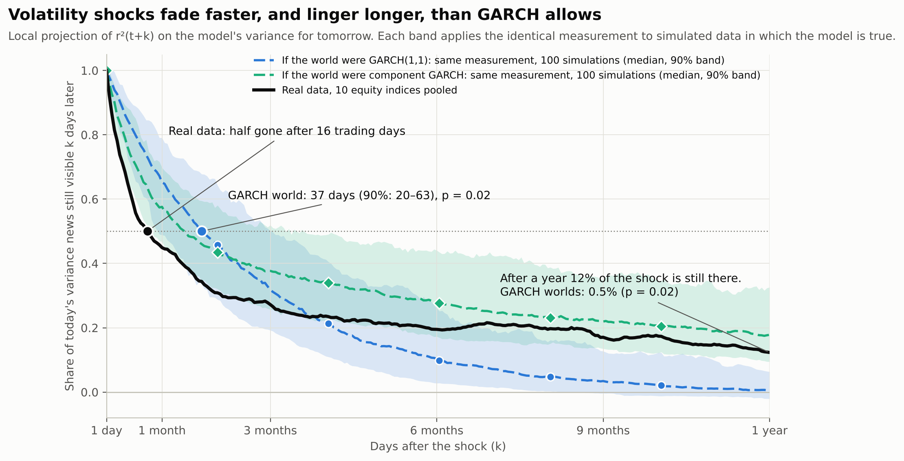
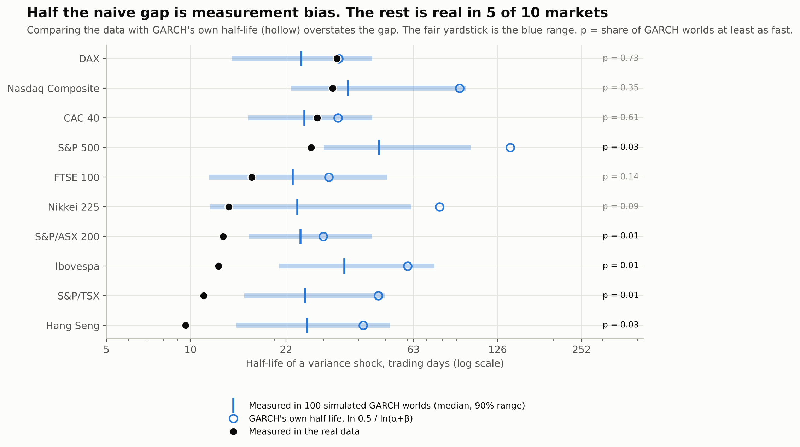
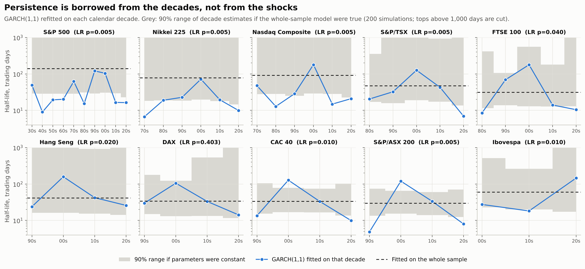
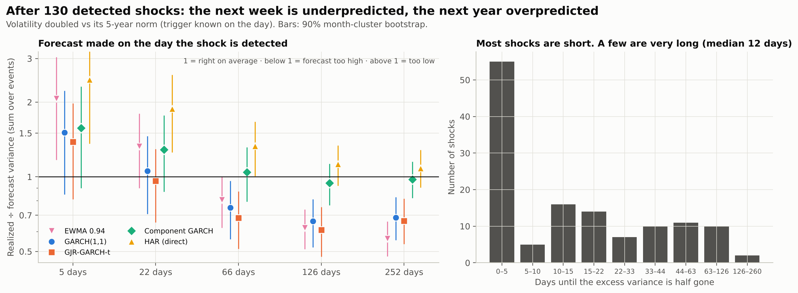
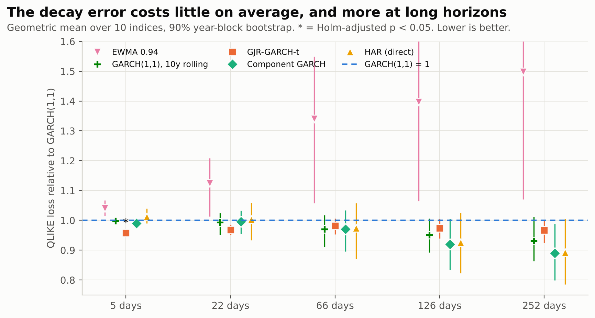
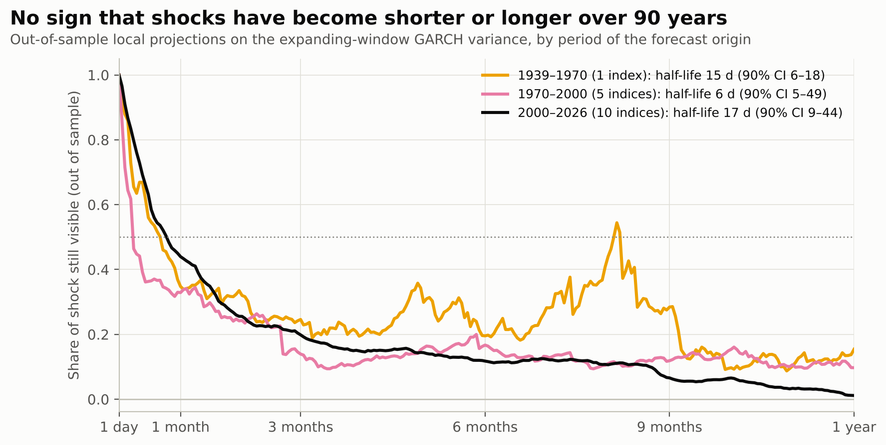

Working paper · Project 13
GARCH's half-life tested against a century of daily data from 10 equity indices, 1928–2026
Project 13 of 30 Quant Research Projects · Working paper, November 2026

Every GARCH(1,1) carries one number that answers a practical question: once volatility jumps, how long until half of the jump is gone? The answer is the half-life, ln 0.5 / ln(α+β). Fitted on daily equity index returns, α+β comes out around 0.99, which says half of a volatility shock is still there after six weeks to seven months, depending on the index. That number drives every multi-week GARCH forecast, every VaR horizon scaling, and the mean-reversion speed that option models inherit.
This paper asks: is that half-life a property of the shocks, and if not, where does it come from? I measure the decay of volatility shocks directly, with local projections (Jordà, 2005). This is a regression of the squared return k days ahead on the variance the model quotes for tomorrow. I then compare it with what GARCH predicts. The comparison uses 10 equity indices: the S&P 500 from 1928, the Nasdaq, TSX, FTSE 100, DAX, CAC 40, Nikkei 225, Hang Seng, ASX 200 and Ibovespa. Together they give 122,000 index-days and 95,500 out-of-sample forecast origins. The test has three parts. The headline test compares the data with the same measurement run on 100 simulated worlds in which the fitted model is true. That matters, because the measurement itself is biased (§4.1). The second part fits GARCH decade by decade and checks the parameter estimates against their bootstrap null distribution. The third is an out-of-sample event study of 130 volatility shocks, with forecasts from six models made on the day each shock was detected.
Main findings
The practical reading: a GARCH(1,1) volatility forecast beyond about a month is a forecast of the volatility regime, and its regime anchor comes from the estimation sample, not from the shock. Use a two-speed model, or a rolling window that keeps the anchor current, for anything beyond a month.
GARCH(1,1) is the default volatility model in risk management and the first one taught. Its parameters are rarely questioned once fitted, but α + β is not a harmless technical detail:
What is new here:
H1 was confirmed only after the simulation correction, and only at half the size first measured. H2 was confirmed. H3 holds in direction but is not significant after Holm. H4 was confirmed beyond 2 months, and reversed at 1 week.
| Index | Symbol | Daily returns from | Out-of-sample origins from | Return days | Forecast origins |
|---|---|---|---|---|---|
| S&P 500 | ^GSPC | 1928-01 | 1939-01 | 24,837 | 22,092 |
| Nasdaq Composite | ^IXIC | 1971-02 | 1982-01 | 14,063 | 11,311 |
| S&P/TSX | ^GSPTSE | 1979-07 | 1990-01 | 11,897 | 9,272 |
| FTSE 100 | ^FTSE | 1984-01 | 1994-01 | 10,832 | 8,307 |
| DAX | ^GDAXI | 1988-01 | 1999-01 | 9,834 | 7,081 |
| CAC 40 | ^FCHI | 1990-03 | 2001-01 | 9,326 | 6,619 |
| Nikkei 225 | ^N225 | 1965-01 | 1976-01 | 15,208 | 12,512 |
| Hang Seng | ^HSI | 1987-01 | 1998-01 | 9,842 | 7,119 |
| S&P/ASX 200 | ^AXJO | 1992-11 | 2003-01 | 8,593 | 6,039 |
| Ibovespa | ^BVSP | 1995-01 | 2006-01 | 7,895 | 5,171 |
| Total | 122,327 | 95,523 |
Daily closes from Yahoo Finance to 2026-11-18. This is the same file as project 03, reused on purpose: it is the only dataset in the series that reaches back a century, and that is what this question needs. Returns are 100 × log close-to-close. Ibovespa starts in 1995 to skip hyperinflation, the same cut as project 03. Price indices omit dividends, which is irrelevant for variance. Before 1957 the S&P series is the S&P 90.
The stress windows of the series are all inside the out-of-sample period: 1987, 2008–09, 2011, 2020 and 2022. In-sample fits also cover 1929–1937.
| Model | Variance recursion | What it says about a shock | Window |
|---|---|---|---|
| EWMA 0.94 (RiskMetrics) | σ²ₜ₊₁ = λσ²ₜ + (1−λ)r²ₜ | never decays (no mean reversion) | – |
| GARCH(1,1) | σ²ₜ₊₁ = ω + αr²ₜ + βσ²ₜ | one exponential, rate α+β | expanding |
| GARCH(1,1), 10y rolling | same | same, but the anchor ω/(1−α−β) is from the last decade | rolling 2,520 days |
| GJR-GARCH(1,1)-t | adds γ·r²ₜ·1[rₜ<0], Student-t | one exponential, rate α+γ/2+β | expanding |
| Component GARCH (Engle & Lee, 1999) | long-run qₜ with rate ρ, transitory σ²−q with rate α+β | two exponentials | expanding |
| HAR (direct) | log RV over the next h days on log RV over the last 5, 22, 66 and 252 days | no structural decay; horizon-specific regression | expanding |
My own QMLE code (src/models.py, numba recursions) matches the arch package's log-likelihood to within 2 points
on 12,500 to 25,000 observations (tests). Multi-step forecasts are closed form: for GARCH,
E[σ²ₜ₊ₖ] = σ̄² + (α+β)^(k−1)(σ²ₜ₊₁ − σ̄²). The first 2,520 days (10 years) of each index are burn-in, so forecasting starts in the eleventh year.
For every forecast origin t and lag k = 1…252:
If the model is right, bₖ = mₖ at every k. The ratio bₖ/b₁ is the share of today's variance news still visible k days later. The k where it crosses 0.5 is the half-life. The intercept absorbs any error in the model's long-run level, so this isolates the dynamics. Indices are pooled with index fixed effects, after scaling each by its mean r². Confidence bands come from a calendar-year block bootstrap (1,000 draws) that resamples the same years for every index, which keeps the cross-market dependence of 2008 or 2020.
src/sim_check.py simulates 25,000-day GARCH paths with t₅ shocks and true half-lives of 34, 69 and 138 days. It
fits GARCH and runs §3.2. The fitted model recovers the truth: 32, 72 and 139 days. The local projection does
not. It reports 28, 37 and 61 days. With fat tails, the variance of r² is barely finite, and the slope at long lags
is pulled towards zero. So the population half-life ln 0.5 / ln(α+β) is the wrong benchmark for a measured one.
The headline test (src/null_worlds.py) therefore compares like with like. For each index it fits GARCH(1,1), and
separately component GARCH, on the full sample. It simulates 100 paths of the same length, with shocks resampled from
that model's own standardized residuals (filtered historical simulation, which keeps the fat tails and skew). It refits
the model on each path and runs the identical in-sample local projection. The p-value is the share of simulated
worlds whose measured half-life is at least as short as the data's. The same simulations give the null distribution
of the one-year tail share.
GARCH(1,1) is fitted on every calendar decade with at least 5 years of data: 51 decade fits. The statistic is
LR = 2(Σ decade log-likelihoods − log-likelihood of the decades at the full-sample parameters). The null distribution
comes from 200 simulations of the full-sample model with bootstrapped residuals, with every fit repeated exactly on
each path (src/stability.py). The same simulations show what spread of decade half-lives estimation noise alone
produces.
A shock is detected on day t when the trailing 22-day realized variance first exceeds 4× its trailing 5-year median (volatility doubles), after at least 126 days below that trigger. Everything is known at t. Over the out-of-sample period this gives 130 events in 80 calendar months. For each event and model, the realized cumulative variance over 5–252 days is compared with the forecast made at t. The main statistic is the ratio of sums, which is unbiased if the model is right. The geometric mean of ratios is pulled below 1 by Jensen's inequality even under a correct model, so it is reported only as a secondary statistic. Inference uses a cluster bootstrap that resamples calendar months.
QLIKE against the realized sum of r² over the next h ∈ {5, 22, 66, 126, 252} days, every trading day. QLIKE is robust to the noise in this proxy (Patton, 2011). There are Diebold–Mariano tests per index (Newey–West with lag h), and a panel geometric mean of loss ratios with a year-block bootstrap. A Holm correction covers the family of 25 comparisons (5 models × 5 horizons, each against GARCH(1,1)).
Out of sample, pooled over 10 indices (results/half_lives.csv, tag main):
| Model | Realized half-life (days, 90% CI) | Half-life implied by the model's own forecasts | Gap, 90% CI |
|---|---|---|---|
| GARCH(1,1) | 16.7 (8.7–34.1) | 81.4 | 64 (35–207) |
| GARCH(1,1), 10y rolling | 17.4 (9.4–37.2) | 53.2 | 36 (22–58) |
| GJR-GARCH-t | 14.6 (8.5–31.5) | 71.8 | 56 (39–79) |
| Component GARCH | 16.6 (8.7–35.4) | 38.1 | 20 (6–52) |
Taken at face value, this says GARCH believes shocks last five times longer than they do. It survives winsorizing r² at the 99.9th percentile (20.1 vs 81.4) and dropping October 1987 to March 1988 (18.2 vs 69.9). But it is not a fair comparison. The placebo in §3.3 shows that the realized measurement would report about half of the true half-life even if GARCH were exactly right (37 for a true 69). The model-implied column has no such bias, because it is a regression of a deterministic function of sₜ. Any comparison of GARCH persistence with an empirical decay of r², such as autocorrelations, faces the same problem.

results/null_world_tests.csv, in-sample fits, 100 worlds per model and index:
| Data | GARCH worlds: median (90%) | p | Component GARCH worlds: median (90%) | p | |
|---|---|---|---|---|---|
| Pooled half-life, days | 16.5 | 37.0 (20.2–63.4) | 0.020 | 30.4 (18.2–62.7) | 0.040 |
| Share left after 252 days | 0.12 | 0.005 | 0.020 | 0.18 | 0.85 |
| Mean share over days 1–126 | 0.33 | 0.39 | 0.25 | 0.44 | 0.050 |
Per index, the measured half-life is faster than at least 97% of GARCH worlds in 5 of 10 markets: S&P 500 (27 vs 47, p = 0.03), S&P/TSX (11 vs 26), ASX 200 (13 vs 25), Ibovespa (13 vs 36), each with p = 0.01, and Hang Seng (10 vs 26, p = 0.03). Nikkei (p = 0.09) and FTSE (p = 0.14) point the same way. DAX (p = 0.73), CAC 40 (0.61) and Nasdaq (0.35) are consistent with GARCH. A one-year tail far above GARCH's is significant for the S&P 500 (0.32 vs 0.02, p = 0.01) and the Nasdaq (0.21 vs 0.00, p = 0.02).
So the shape result is real: a fast initial decay followed by a long tail. A single exponential has one dial. To fit the tail it must decay slowly, and then it misses the start. Component GARCH has two dials. It matches the tail but its maximum-likelihood fit still decays too slowly in the first weeks (16 days in the data against 30 in component GARCH worlds, p = 0.04).

| Index | Decades | Full-sample half-life | Median decade half-life | Same, if parameters were constant | LR p |
|---|---|---|---|---|---|
| S&P 500 | 10 | 140 | 20 | 98 | 0.005 |
| Nikkei 225 | 6 | 78 | 19 | 56 | 0.005 |
| Nasdaq | 6 | 92 | 25 | 76 | 0.005 |
| S&P/TSX | 5 | 47 | 32 | 41 | 0.005 |
| FTSE 100 | 5 | 31 | 14 | 28 | 0.040 |
| Hang Seng | 4 | 42 | 34 | 39 | 0.020 |
| DAX | 4 | 34 | 32 | 29 | 0.403 |
| CAC 40 | 4 | 34 | 23 | 32 | 0.010 |
| ASX 200 | 4 | 30 | 21 | 28 | 0.005 |
| Ibovespa | 3 | 60 | 27 | 51 | 0.010 |
(p = 0.005 is the floor with 200 simulations.) Short windows do bias the persistence estimate down (for the
S&P 500, 98 days instead of 140 if nothing changed), but much less than the real decade fits fall. The median decade
half-life is below the constant-parameter null in 9 of 10 indices, and less than about half of it in the S&P 500,
Nikkei, Nasdaq, FTSE and Ibovespa. The pattern in Figure 3 is regular. Long half-lives appear in decades that contain a regime shift in the
level of volatility: the S&P 500 in the 1990s and 2000s (121 and 104 days), and the 2000s in 8 of 9 other indices
(70–180 days). Six of the ten S&P 500 decades give 9–20 days. The 140-day half-life of the S&P 500 is not a property of any decade
in its history. This is also what makes the S&P 500 the index where an expanding-window GARCH forecasts worst at
long horizons. Its anchor σ̄² still remembers the 1930s: at one year, the 10-year rolling GARCH has 43% lower
QLIKE, and HAR 55% lower (results/qlike_by_index.csv).

Realized ÷ forecast cumulative variance on the 130 shock days, as a ratio of sums with a 90% month-cluster bootstrap
(results/event_errors.csv):
| Horizon | GARCH(1,1) | GJR-GARCH-t | Component GARCH | HAR | EWMA |
|---|---|---|---|---|---|
| 5 days | 1.51 (0.85–2.22) | 1.38 | 1.57 | 2.47 | 2.07 |
| 22 days | 1.06 (0.71–1.46) | 0.96 | 1.29 | 1.88 | 1.33 |
| 66 days | 0.75 (0.56–0.96) | 0.68 | 1.04 | 1.33 | 0.81 |
| 126 days | 0.66 (0.52–0.81) | 0.61 | 0.95 | 1.13 | 0.62 |
| 252 days | 0.68 (0.56–0.83) | 0.66 | 0.98 | 1.08 | 0.56 |
Two errors, in opposite directions. In the first week, every model under-forecasts in aggregate, because the trigger often fires on the first leg of a crash (the 1987 trigger fired on Friday 16 October, the trading day before Black Monday). From 3 months on, realized variance under GARCH and GJR-t came in about a third below the forecast, and below it in about three events out of four. Component GARCH is unbiased at long horizons. HAR is too slow at the start, because its regressors are trailing averages.
The halfway time of each event's excess variance (Figure 4, right) shows why the decay curve has two speeds. 42% of shocks are half gone within 5 days. Most are one-day jumps, such as the S&P 500 after the Kennedy assassination in November 1963, or the February 2018 "Volmageddon" day. Another 18% take more than two months: 1998 LTCM, 2000–02, 2008 in Brazil, 2020 in Europe. A single exponential is fitted to the average of a mixture of very short and very long episodes. Figure 7 shows four of them. In 1987 the expanding-window S&P GARCH actually forecast rising volatility after the crash, because its anchor was the 1930s.

Panel QLIKE relative to GARCH(1,1), geometric mean over 10 indices with a 90% year-block bootstrap
(results/qlike_panel.csv):
| Horizon | EWMA | GARCH 10y | GJR-t | Component GARCH | HAR |
|---|---|---|---|---|---|
| 5 days | 1.04 | 1.00 | 0.96 (Holm p = 0.01) | 0.99 | 1.01 |
| 22 days | 1.12 | 0.99 | 0.97 (Holm p = 0.10) | 1.00 | 1.00 |
| 66 days | 1.34 | 0.97 | 0.98 | 0.97 | 0.97 |
| 126 days | 1.40 | 0.95 | 0.97 | 0.92 | 0.93 |
| 252 days | 1.50 | 0.93 | 0.97 | 0.89 (0.80–0.99) | 0.89 (0.79–1.01) |
The decay error has a small average cost. Over all days, a shock is the exception, and between shocks GARCH's slow decay does little harm. The cost grows with the horizon, as H3 predicted, but nothing beyond one week survives the Holm correction over 25 comparisons. The one robust conclusion is that EWMA, which has no mean reversion at all, is the worst model at every horizon of three months or more (34–50% worse than GARCH). Even an over-persistent model beats a model with no persistence limit.
In the stress windows (results/stress_windows.csv, all indices, h = 22), GJR-t is the best model in 2008–09, 2011 and
2020, with GARCH(1,1) 3–4% behind it. In 2022, a slow-building bear market, HAR was best (0.93). Component GARCH is 12–18% worse, and HAR 35–38% worse in 2008 and
2020. A model that expects fast decay is hurt when a shock keeps building, so the event study and the stress windows
tell the same two-sided story.

Pooled out-of-sample decay by period of the forecast origin: 1939–1969 (S&P 500 only), 15 days (90% CI 6.5–18); 1970–1999, 6 days (5–49, very wide because of 1987); 2000–2026, 17 days (9–44). There is no detectable trend. Fast decay is not a feature of modern, electronic markets: it was already there in the 1940s.
| Check | Result | File |
|---|---|---|
| Winsorize r² at 99.9% | out-of-sample realized half-life 20 vs 81 for the model | half_lives.csv, tag winsor99.9 |
| Drop Oct 1987 to Mar 1988 | 18 vs 70 | tag drop1987 |
| Other yardstick models (GARCH 10y rolling, GJR-t, CGARCH) | realized half-lives 15–17 in every case | half_lives.csv |
| Placebo: two-component world (true half-life 17–20) | local projection recovers 17–22 | simulation_check.csv |
| Same optimizer on data and simulated paths | yes: all fits use the same multi-start QMLE | stability.py |
| Event trigger only after 1970 (115 events) | median halfway time 14 days, against 12 for all events | events.csv |
calibration_by_state.csv). The bias appears only when conditioning on
the moment a shock is detected.pip install -r requirements.txt
bash run_all.sh # tests, all experiments and figures; about 15 minutes on 4 cores
All numbers in this document are in results/*.csv. Seeds are fixed. Data: data/index_closes.csv, the same file as
project 03 (refresh with ../03-moving-average-volatility/src/fetch_data.py).
| File | What it does |
|---|---|
src/models.py |
GARCH, GJR-t, component GARCH, EWMA: QMLE, filters, closed-form forecasts, simulators |
src/backtest.py |
yearly-refit walk-forward forecasts at 5 horizons (results/forecasts/*.pkl.gz, not committed: rebuilt in about 80 seconds) |
src/irf.py |
out-of-sample local projections and half-lives, with robustness and era splits |
src/sim_check.py |
placebo: what the measurement reports when the truth is known |
src/null_worlds.py |
headline test against 100 simulated GARCH and component GARCH worlds per index |
src/stability.py |
decade fits and parametric-bootstrap LR test |
src/episodes.py |
event study of 130 detected shocks |
src/evaluate.py |
QLIKE, Diebold–Mariano, Holm, stress windows, calibration by state |
src/figures.py |
all figures |
tests/ |
11 tests, including cross-checks against the arch package and a no-look-ahead test |
Andersen, T., Bollerslev, T. (1997). Heterogeneous information arrivals and return volatility dynamics. Journal of Finance 52(3). Bollerslev, T. (1986). Generalized autoregressive conditional heteroskedasticity. Journal of Econometrics 31(3). Corsi, F. (2009). A simple approximate long-memory model of realized volatility. Journal of Financial Econometrics 7(2). Ding, Z., Granger, C., Engle, R. (1993). A long memory property of stock market returns and a new model. Journal of Empirical Finance 1(1). Engle, R., Bollerslev, T. (1986). Modelling the persistence of conditional variances. Econometric Reviews 5(1). Engle, R., Lee, G. (1999). A long-run and short-run component model of stock return volatility. In Cointegration, Causality and Forecasting, Oxford UP. Glosten, L., Jagannathan, R., Runkle, D. (1993). On the relation between the expected value and the volatility of the nominal excess return on stocks. Journal of Finance 48(5). Holm, S. (1979). A simple sequentially rejective multiple test procedure. Scandinavian Journal of Statistics 6(2). Jordà, Ò. (2005). Estimation and inference of impulse responses by local projections. American Economic Review 95(1). Lamoureux, C., Lastrapes, W. (1990). Persistence in variance, structural change, and the GARCH model. Journal of Business & Economic Statistics 8(2). Mikosch, T., Stărică, C. (2004). Nonstationarities in financial time series, the long-range dependence, and the IGARCH effects. Review of Economics and Statistics 86(1). Patton, A. (2011). Volatility forecast comparison using imperfect volatility proxies. Journal of Econometrics 160(1).